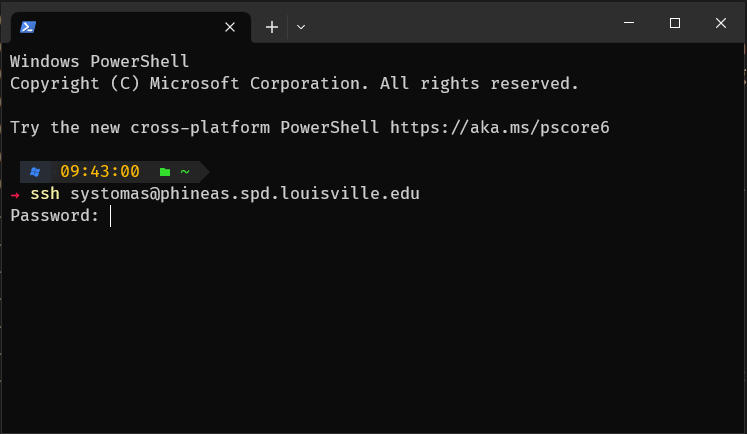
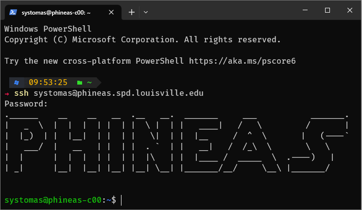
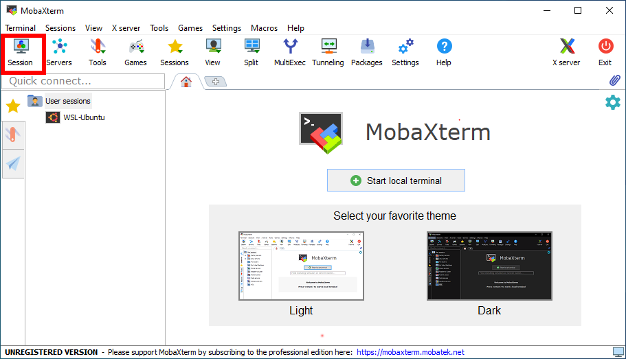
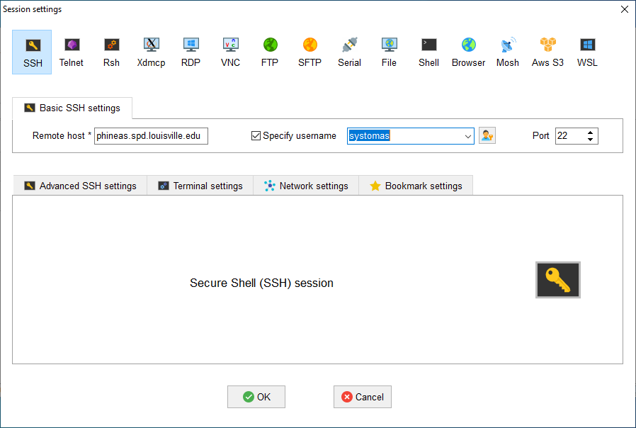
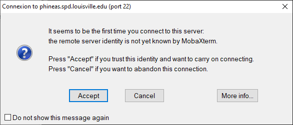
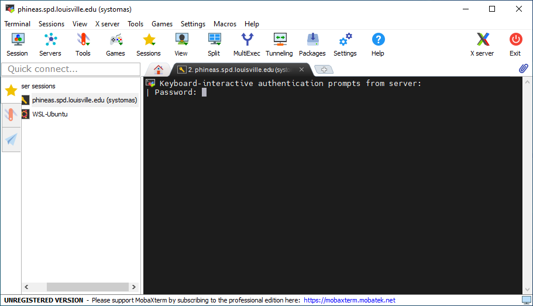
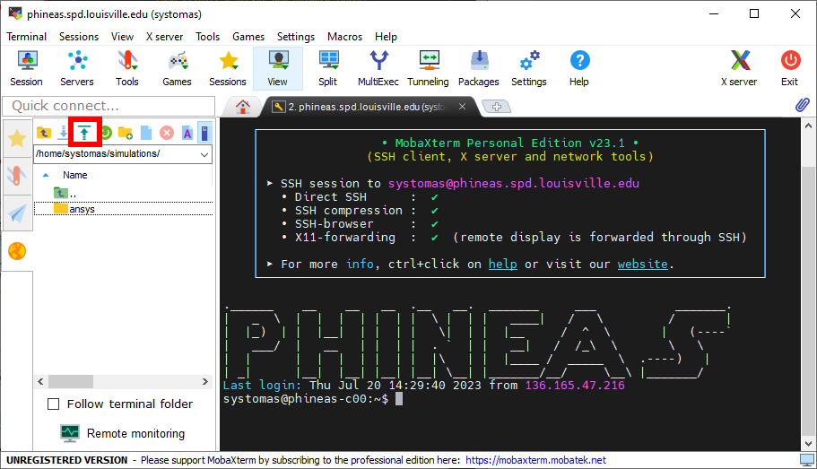

HPC system overview
About the cluster
Phineas consists of a total of 10 servers, with one serving as the coordinator, often referred to as the head node, and the remaining nine functioning as workers. The head node assumes the crucial role of overseeing state management and orchestrating the distributed coordination of services across all other servers. Conceptually, it serves as the intellectual nucleus of the entire cluster, akin to its very own brain.
Given that the head node acts as the exclusive entry point to the system, logging into the cluster equates to logging into this head node. In order to execute any kind of (scientific) software, such as Ansys, OpenFOAM, GROMACS, or others, the cluster relies on a sophisticated job scheduling system known as Slurm. Slurm facilitates the equitable sharing of resources among multiple users by effectively managing node allocation, CPU distribution, memory utilization, and other vital resources based on individual job requirements.
To safeguard against interference between users’ jobs, access to the worker nodes is restricted exclusively to those users whose jobs are actively running on them. For instance, if a user named “lk01” submits a job and Slurm allocates the node “phineas-c01” for its execution, then “lk01” will have the privilege to log into “phineas-c01”.
About Scientific Software
In Linux distributions, program behavior is influenced by dynamic values
known as “environmental variables.” These variables can be created, modified,
and removed as needed, playing a crucial role in shaping the functionality of
programs and services on a computer. For instance, the variable PATH contains
a list of file system addresses, separated by colons (:), representing folders
where binaries are stored. When a command is executed in the terminal,
the system scans the folders indicated by the addresses within PATH
in search of a corresponding binary. If the system fails to locate the desired binary,
it returns an error message stating “command not found.”
In addition, scientific software applications like GROMACS or OpenFOAM often define their own extensive sets of environmental variables. Managing and keeping track of these variables and their intended values can be time-consuming and swiftly give rise to complications. To overcome this challenge, the cluster incorporates the use of Environmental Modules, offering a convenient approach to dynamically adjust users’ environments through the utilization of modulefiles.
To explore the available modules, users can employ the module available command,
allowing them to examine the assortment of modules at their disposal. Subsequently,
users can load the appropriate module by executing the command module load modulename,
effectively incorporating the desired module into their environment.
About Jobs
Users have the flexibility to submit two distinct types of jobs: interactive and batch. With an interactive job, the user gains direct access to the node assigned by Slurm, enabling them to personally execute any desired program. In contrast, batch jobs operate autonomously and are transmitted to Slurm in the form of shell scripts, executing without the need for user intervention.
In the event of a disconnection from the cluster, whether caused by internet complications
or other unforeseen issues, batch jobs remain unaffected, persevering independently.
However, interactive jobs are susceptible to termination, as they rely on the user’s
ongoing connection. To circumvent such circumstances and maintain job continuity,
users often resort to employing a terminal multiplexer such as tmux.
By invoking the tmux command on the head node before initiating an interactive job,
tmux initiates a persistent terminal session on the head node itself.
This session persists even if the connection between the user’s personal computer and
the head node becomes severed, ensuring the job remains intact and uninterrupted.
Quickstart
Logging into the cluster
Upon creating an account, users are provided with a username and password, which they can utilize to access the cluster via SSH (Secure Shell Protocol). The procedure entails employing an SSH client from their personal computers to establish a connection with the head node.
Using the command line
Windows (versions 10 and 11) inherently supports an SSH command-line client within PowerShell. Similarly, Mac and Linux based operating systems come equipped with a built-in SSH client accessible via their respective terminals. The basic login process remains consistent across all of these platforms:
Launch the terminal on your personal computer.
Enter the ssh command using the following format:
ssh username@hostname. In this particular scenario, the hostname is alwaysphineas.spd.louisville.edu. For instance, if the user’s name is “lk01”, they would inputssh lk01@phineas.spd.louisville.edu.Provide your password and press Enter.

{kind=link}
{kind=link}
Alternatively, users can opt for other popular SSH clients installed on their personal computers, such as MobaXterm and PuTTY. PuTTY boasts a straightforward and user-friendly interface, while MobaXterm offers a tabbed interface with enhanced functionality, including a dedicated file manager that simplifies file management on the cluster and facilitates seamless information transfer between the personal computer and the cluster.
Using MobaXterm
Click on “Session” at the top-left of the window
Setup your username and the cluster hostname
phineas.spd.louisville.eduA notice like the one below will appear the first time you connect to the cluster. Click “Accept”.
Write your password (it will not be displayed as you type it) and hit Enter

{kind=link}
{kind=link}
{kind=link}
{kind=link}
Copying files to/from the cluster
Using the command line
The command scp (available on Windows, Mac and Linux based OSs) is the preferred way
to copy files to and from the cluster. See a comprehensive list of options at the
scp guide. Since a user’s
home directory (/home/<username>, or simply ~) is shared across all nodes, users are encouraged
to use their home directories as a staging area for file transfers.
Example: Assume user Jhon Doe is assigned cluster account jh01. The code below
shows how Jhon would copy the file C:\Users\jhondoe\Downloads\workload.jou from his
personal computer to his home directory (/home/jh01) in the cluster using the
scp command in Windows PowerShell.
# Jhon could also use ~ instead of /home/jh01. That is, the following is also valid:
# scp C:\Users\jhondoe\Downloads\workload.jou jh01@phineas.spd.louisville.edu:~
scp C:\Users\jhondoe\Downloads\workload.jou jh01@phineas.spd.louisville.edu:/home/jh01
Suppose Jhon Doe ran a simulation and got the results stored at /home/jh01/results/sim_1_res.dat
in the cluster. If he wants to copy these retults to the folder C:\Users\jhondoe\Documents
of his Windows PC, he would execute the command below from a PowerShell session:
# The following is also valid:
# scp jh01@phineas.spd.louisville.edu:~/results/sim_1_res.dat C:\Users\jhondoe\Documents
scp jh01@phineas.spd.louisville.edu:/home/jh01/results/sim_1_res.dat C:\Users\jhondoe\Documents
Using MobaXterm
Downloading files or folders from the cluster
{kind=link}
{kind=link}
Uploading files or folders to the cluster
Locate the “File Explorer” from MobaXterm and navigate towards the location where
Click on the upload icon within the “File Explorer” and select the file or folder you want to upload.

{kind=link}
Using software installed in the cluster
List available software
Use command module avail as shown in the example below:
user@phineas-c00:~$ module avail
------------------------------- /apps/modulefiles/Linux ---------------------------
ansys/2023r1 mkl/2023.0.0
boost/1.81_gcc12.2_ompi4.1.5_python3.11.2 mpc/1.3.1
cloog/0.20.0 mpfr/4.2.0
cmake/3.26.1 openblas/0.3.21_gcc12.2
fftw/3.3.10_ompi4.1.5_gcc12.2 openfoam/2212
gcc/12.2 openmpi/4.1.5_gcc12.2 (D)
gmp/6.2.1 openmpi/4.1.5
gromacs/2023_ompi4.1.5_gcc12.2 (S) openssl/3.0.8_gcc12.2
icu/72.1_gcc12.2 python/3.11.2_gcc12.2
infiniband ucx/1.14.0_gcc12.2
lammps/23Jun2022_fftw3.3.10_ompi4.1.5_gcc12.2 zlib/1.2.13
miniconda3/23.1.0
Where:
S: Module is Sticky, requires --force to unload or purge
D: Default Module
Load software
Users must load programs with the module load <modulename> before launching them.
Multiple programs can be loaded at the same time, but there are cases where two or more may conflict.
For instance, programs openmpi/4.1.5_gcc12.2 and openmpi/4.1.5 cannot be loaded together.
For such cases the program loaded last is used. An example of this is shown below:
user@phineas-c00:~$ module load openmpi/4.1.5_gcc12.2
user@phineas-c00:~$ module load openmpi/4.1.5
Lmod is automatically replacing "gcc/12.2" with "openmpi/4.1.5".
The following have been reloaded with a version change:
1) openmpi/4.1.5_gcc12.2 => openmpi/4.1.5
Remark: Programs MUST only be run through slurm, NOT on the head node (phineas-c00). Users can test their scripts using an interactive job first and then submit the appropriate batch job (See Section Slurm for more details).
List currently loaded software
Use command module list as shown in the example below:
user@phineas-c00:~$ module load python/3.11.2_gcc12.2
user@phineas-c00:~$ module list
Currently Loaded Modules:
1) zlib/1.2.13 4) mpc/1.3.1 7) openssl/3.0.8_gcc12.2
2) gmp/6.2.1 5) cloog/0.20.0 8) python/3.11.2_gcc12.2
3) mpfr/4.2.0 6) gcc/12.2
Note that besides python/3.11.2_gcc12.2 there are other programs loaded.
These other programs are dependencies that are automatically loaded.
Unloading software
Use command module unload <modulefile>. This command only unloads the
indicated program, but not its dependencies. To clean the environment and
unload all modules, users should use the command module purge. Example:
user@phineas-c00:~$ module load python/3.11.2_gcc12.2
user@phineas-c00:~$ module unload python/3.11.2_gcc12.2
user@phineas-c00:~$ module list
Currently Loaded Modules:
1) zlib/1.2.13 4) mpc/1.3.1 7) openssl/3.0.8_gcc12.2
2) gmp/6.2.1 5) cloog/0.20.0
3) mpfr/4.2.0 6) gcc/12.2
user@phineas-c00:~$ module purge
user@phineas-c00:~$ module list
No modules loaded
Queues and jobs
The cluster has two queues named longjobs and gpgpu.
To see information about queues, users can use the
sinfocommand.When users send jobs, they can monitor their job status using the
squeuecommand.To launch an interactive job, users can user the
srun --time=<walltime> --pty /bin/bash -icommand. See Section Starting an interactive job for more information.To submit an unattended job, users can use the command
sbatchas follows:sbatch /path/to/sbatch/script. See Section Submitting batch jobs for more informationTo cancel jobs, users can use the
scancelcommand as follows:scancel jobid
Limits
Users cannot request more than 3 nodes on a single job.
A job can only request a maximum of 20 cores per node and 120GB of memory.
The maximum allowed walltime for jobs on all queues is 1 day and 12h. Contact Speed IT if more time is required for a job.